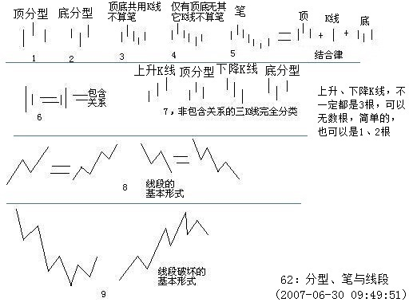
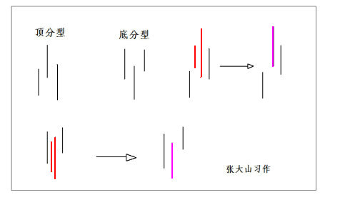
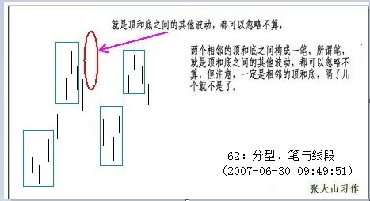
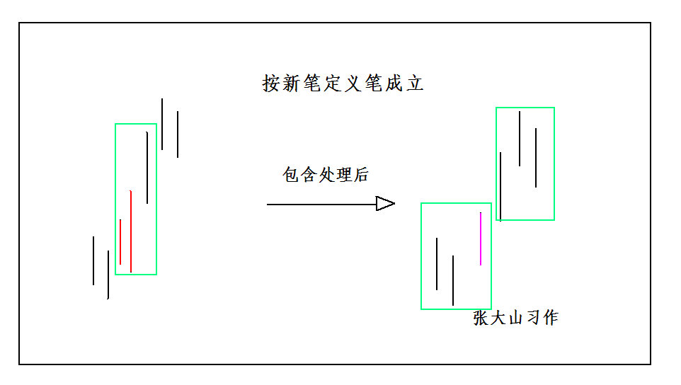
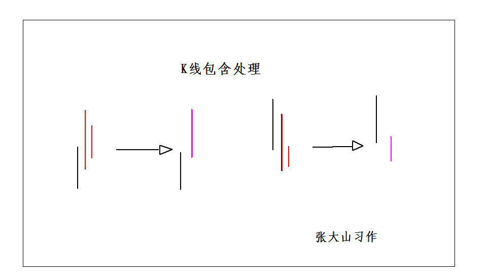
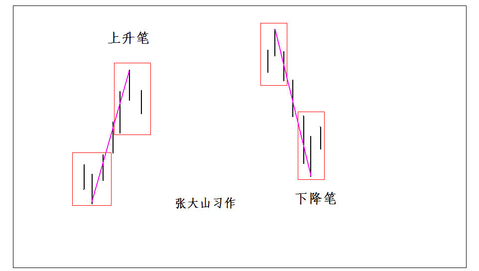
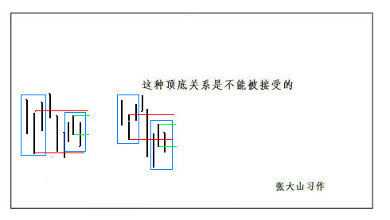
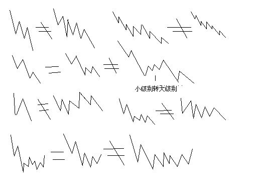
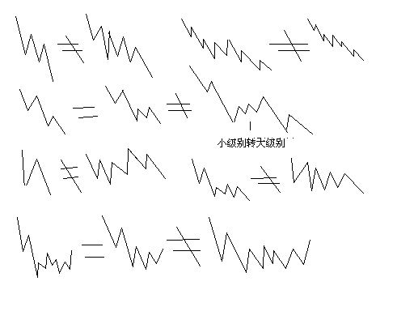

Walter：
正文
在宾馆里闲着等着 10 点开始的腐败，半个小时，找个面首来面首有点时间紧张，还不如给各位写个主贴，来个课程，耗费一下各位周末腐败的时间。
瞧了一下，有位叫石猴的网友写了帖子来解释什么是线段，他的理解还行，但不够严密。其实，本 ID 的线段是可以最精确定义的，本 ID 的理论，本质上是一套几何理论，其有效性就如同几何一般，本 ID 理论当然有失败不严谨的时候，但这前提是几何的基础失败不严谨，不明白这一点，就不明白本 ID 的理论。这里，就把本来是后面的课程提前说说。
下面的定义与图，都适合任何周期的 K 线图。先看图中的第 1、2，图中的小线段代表的是 K 线，这里不分阳线阴线，只看 K 线高低点。

像图 1 这种，第二 K 线高点是相邻三 K 线高点中最高的，而低点也是相邻三 K 线低点中最高的，本 ID 给一个定义叫顶分型；图 2 这种叫底分型，第二 K 线低点是相邻三 K 线低点中最低的，而高点也是相邻三 K 线高点中最低的。看不明白定义的，看图就明白了，这么直观都不明白，那去和孔男人为伍吧。
顶分型的最高点叫该分型的顶，底分型的最低点叫该分型的底，由于顶分型的底和底分型的顶是没有意义的，所以顶分型的顶和底分型的底就可以简称为顶和底。也就是说，当我们以后说顶和底时，就分别是说顶分型的顶和底分型的底。

两个相邻的顶和底之间构成一笔，所谓笔，就是顶和底之间的其他波动 ，都可以忽略不算，但注意，一定是相邻的顶和底，隔了几个就不是了。而 所谓的线段，就是至少由三笔组成 。但这里有一个细微的地方要分清楚，因为结合律是必须遵守的，像图 3 这种，顶和底之间必须共用一个 K 线，这就违反结合律了，所以这不算一笔，而图 4，就光是顶和底了，中间没有其他 K 线，一般来说，也最好不算一笔，而图 5，是一笔的最基本的图形，顶和底之间还有一根 K 线。 在实际分析中，都必须要求顶和底之间都至少有一 K 线当成一笔的最基本要求 。
当然，实际图形里，有些复杂的关系会出现，就是相邻两 K 线可以出现如图 6 这种包含关系，也就是一 K 线的高低点全在另一 K 线的范围里，这种情况下，可以这样处理，在向上时，把两 K 线的最高点当高点，而两 K 线低点中的较高者当成低点，这样就把两 K 线合并成一新的 K 线；反之，当向下时，把两 K 线的最低点当低点，而两 K 线高点中的较低者当成高点，这样就把两 K 线合并成一新的 K 线。经过这样的处理，所有 K 线图都可以处理成没有包含关系的图形。
而图 7，就给出了经过以上处理，没有包含关系的图形中，三相邻 K 线之间可能组合的一个完全分类，其中的二、四，就是分别是顶分型和底分型，一可以叫上升 K 线，三可以叫下降 K 线。所以，上升的一笔，由结合律，就一定是底分型 + 上升 K 线 + 顶分型；下降的一笔，就是顶分型 + 下降 K 线 + 底分型。注意，这里的上升、下降 K 线，不一定都是 3 根，可以无数根，只要一直保持这定义就可以。当然，简单的，也可以是 1、2 根，这只要不违反结合律和定义就可以。
至于图 8，就是线段的最基本形态，而图 9，就是线段破坏，也就是两线段组合的其中一种形态。有人可能要说，这怎么有点像波浪理论，这有什么奇怪的，本 ID 的理论可以严格地推论出波浪理论的所有结论，而且还可以指出他理论的所有不足，波浪理论和本 ID 的理论一点可比性都没有。不仅是波浪理论，所有关于股市的理论，只要是关系到图形的，本 ID 的理论都可以严格推论，因为本 ID 的理论是关于走势图形最基础的理论，谁都逃不掉。
不能再废话了，下面车来了，腐败开始，大家也腐败去吧。

课文学习用图：
- K 线顶分型、底分型 ：（附课文学习用图）
“ 第二 K 线高点是相邻三 K 线高点中最高的，而低点也是相邻三 K 线低点中最高的，本 ID 给一个定义叫顶分型 ”；“ 底分型，第二 K 线低点是相邻三 K 线低点中最低的，而高点也是相邻三 K 线高点中最低的 ”。

-
顶分型的最高点叫该分型的顶，底分型的最低点叫该分型的底。顶分型的顶和底分型的底就可以简称为顶和低 。也就是说，当我们以后说顶和底时，就分别是说顶分型的顶和底分型的底。
-
笔：两个相邻的顶和底之间构成一笔 ，所谓笔，就是顶和底之间的其他波动，都可以忽略不算，但注意，一定是相邻的顶和底，隔了几个就不是了。一笔的最基本的图形，顶和底之间还有一根 K 线。在实际分析中，都必须要求顶和底之间都至少有一 K 线当成一笔的最基本要求。

-
新笔定义 ：本 ID 想了想，计算了一下能量力度，觉得以后可以把笔的成立条件略微放松一下，就是一笔必须满足以下两个条件 :
- 顶分型与底分型 经过包含处理后 ，不允许共用 K 线，也就是不能有一 K 线分别属于顶分型与底分型，这条件和原来是一样的，这一点绝对不能放松，因为这样，才能保证足够的能量力度；
- 在满足 1 的前提下，顶分型中最高 K 线和底分型的最低 K 线之间（不包括这两 K 线），不考虑包含关系 ( 在包含处理之前 )，至少有 3 根（包括 3 根）以上 K 线。显然，第二个条件，比原来分型间必须有独立 K 线的一条，要稍微放松了一点，这样，象今天绿箭头所指的地方，就是一笔了，相应那三笔下来就构成一段了，整个划分就不会出现比较古怪的线段。

- 包含处理：实际图形里，有些复杂的关系会出现，就是相邻两 K 线可以出现如图 6 这种包含关系，也就是一 K 线的高低点全在另一 K 线的范围里，这种情况下，可以这样处理，在向上时，把两 K 线的最高点当高点，而两 K 线低点中的较高者当成低点，这样就把两 K 线合并成一新的 K 线；反之，当向下时，把两 K 线的最低点当低点，而两 K 线高点中的较低者当成高点，这样就把两 K 线合并成一新的 K 线。

- 笔的基本形态：

- 新笔定义与老笔定义的细微差别：

- 不能成立的笔：

附：61 课 6.23 日周六写的一篇关于线段的短文
周末，用股票长沙各位一把 (2007-06-23 16:15:21) 原文网址： http://blog.sina.com.cn/s/blog_486e105c01000bbc.html#comment19
长沙，一个正被一群女性化幼男折腾着的城市，到处散发着腐烂的气息。本 ID 虽然喜欢腐败，但对女性化幼男的腐烂没兴趣。企图以贩卖中性男女糜烂中国的长沙，最近还有一个娱乐，就是关于所谓中国地王的。相比之下，曾剃头已经算是忒可爱了。
中午刚腐败结束，晚上接着来，接着的一周转战 N 省，腐败到底。有点空闲，学着画了两图，周末音乐会开不了，就用股票长沙各位一把。图一里的图形都是等价的，都是一线段；图二里，区分了一些容易混淆的。随手画的，各位凑合看吧。
长沙，最大的好处，就是没有任何 419 的诱惑，至少按照本 ID 的审美标准，这里是最安全的城市了。在这里还要度过两个安全的、没有诱惑的夜晚。那些没有诱惑的街道，如同卖点过后的下降通道。今晚，湘江上是否有一叶扁舟，浮着轻凉的月光，让本 ID 去私人股权投资一把？ 先下，再见。
(2007-06-23 16:19:22)
 

附二：大盘日线 6124-1664 笔线段划分